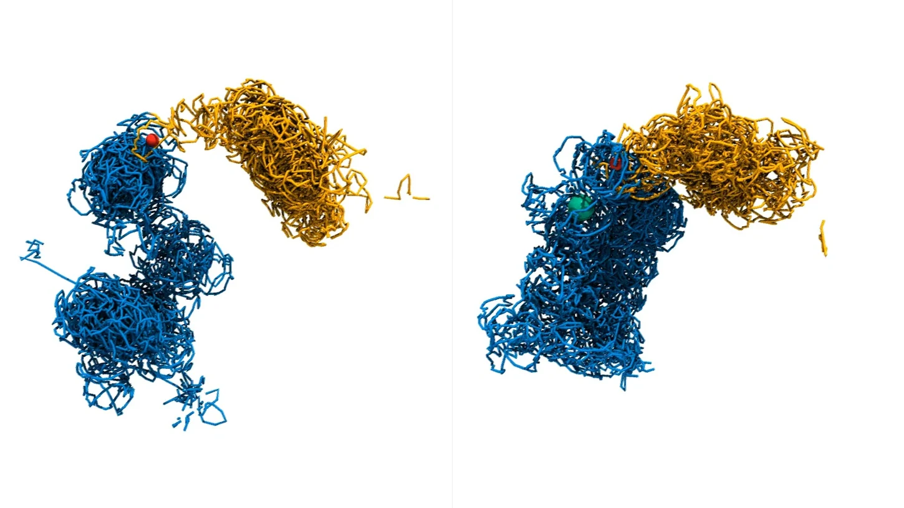

Allele-specific chromosome structure
Domain separation on the inactive X chromosome
How does the arrangement of two chromosome segments differ between the reconstructed inactive and active X?
Wei project · Xist and Dxz4
Allele-specific X chromosome reconstructions
FLAMINGO reconstructed the inactive X (Xi) and active X (Xa) from 10 kb contact matrices. The models mark Xist in red and Dxz4 in green so that both loci can be located in the folded chromosome.
The inactive X shows clearer domain separation
In the paired view, the blue and gold regions form more distinct lobes on Xi. The two regions lie closer together on Xa. This visual comparison describes the reconstructed geometry; a causal role for Xist would require perturbation evidence.


Method reference · FLAMINGO reconstruction paper